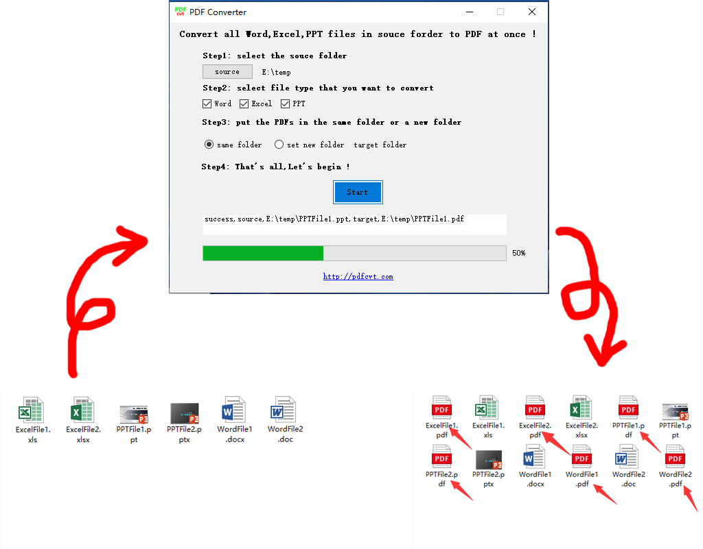
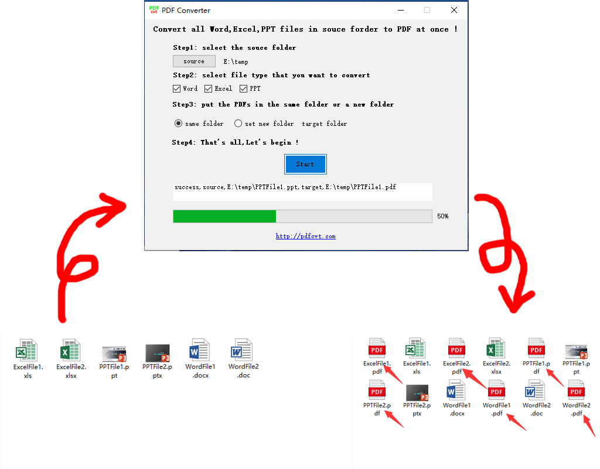

Introduction
Just download PDFcvt and run it on your computer,you can see a simple and clear interface.Then just follow the prompts on the interface.

Just download PDFcvt and run it on your computer,you can see a simple and clear interface.Then just follow the prompts on the interface.
